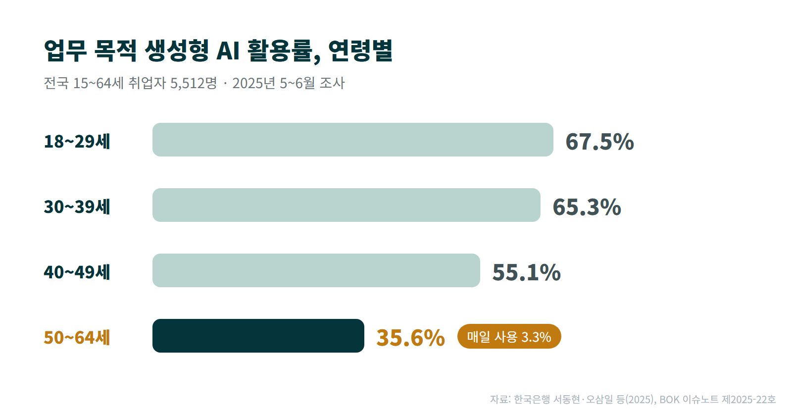
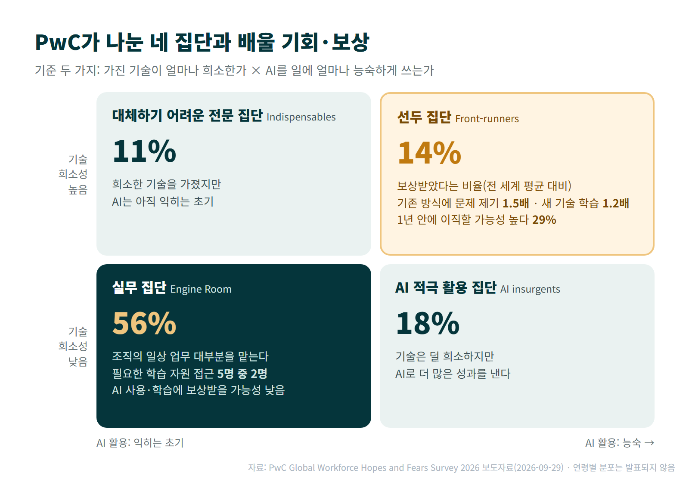

50~64세 취업자 100명 가운데 업무에 생성형 AI를 매일 쓰는 사람은 3명이다. 한국은행 연구진이 2025년 전국 15~64세 취업자 5,512명을 조사한 결과다.
올해 PwC가 48개 국가·지역 직장인 4만9천여 명을 조사한 결과를 보면, AI를 매일 쓰는 사람은 1년 사이 14%에서 22%로 늘었다. 그런데 일에 필요한 학습 자원을 얻을 수 있다고 답한 사람은 59%에서 51%로 줄었다.
한국 50대는 이 흐름에서 불리한 처지에 있다. 회사 안에서 배울 기회가 줄어드는 지금, 50대에게는 AI를 배우는 것만으로 부족하다. 배운 것과 일에 쓴 결과를 스스로 남겨야 한다. AI를 늦게 시작했다는 사실보다, 그 결과가 어디에도 남지 않는 상태가 다음 일을 찾을 때 더 불리하기 때문이다.
한국 50대는 AI를 업무에 덜 쓴다
한국은행 서동현·오삼일 연구진의 조사에서 업무에 생성형 AI를 쓰는 사람은 18~29세에서 67.5%, 50~64세에서 35.6%였다. 50~64세 가운데 매일 쓰는 사람은 3.3%였다.

활용률 차이는 나이에만 따르지 않았다. 대학원 졸업자의 활용률은 72.9%, 고등학교 이하 졸업자는 38.4%였고, 연구진은 전문직과 관리직의 활용률도 상대적으로 높다고 정리했다. 50대의 낮은 활용률을 나이 탓으로만 돌릴 근거는 없다. 나이는 바꿀 수 없지만, 일에서 AI를 쓰는 습관은 지금부터 만들 수 있다.
서울AI재단이 서울시민 5,500명을 방문 면접한 2025년 조사에서도 생성형 AI를 써 본 사람은 55세 미만 63.9%, 55세 이상 12.2%였다. AI 시대에 준비가 됐다고 답한 55세 이상은 19.6%였다. 두 조사는 대상과 질문이 달라서 여기서는 숫자를 직접 비교하지 않는다.
AI를 잘 쓰는 소수에게 배울 기회와 보상이 몰린다
PwC 글로벌 인력 부문 책임자 피트 브라운은 이번 조사 결과를 이렇게 요약했다. "전 세계 인력이 서로 다른 속도로 움직이기 시작할 위험이 실제로 있다. 절반이 넘는 직장인은 AI와 기술 학습에서 아직 다른 사람들만큼 혜택을 보지 못하는 반면, 희소한 기술과 강한 AI 역량을 갖춘 사람들은 더 자신감을 얻고 직장을 옮기기도 쉬워지고 있다."
PwC는 이 차이를 보여 주려고 응답자를 두 가지 기준으로 나눴다. 하나는 가진 기술이 시장에서 얼마나 희소한가, 다른 하나는 AI를 일에 얼마나 능숙하게 쓰는가다. 가장 큰 집단은 기술이 희소하지 않고 AI도 이제 익히기 시작한 실무 집단(Engine Room)으로, 전체의 56%다. 조직의 일상 업무 대부분을 이 집단이 맡는다. 이와 정반대인 집단은 희소한 기술과 능숙한 AI 활용을 함께 갖춘 선두 집단(Front-runners)으로, 14%다. 나머지 두 집단은 기술은 덜 희소하지만 AI로 더 많은 성과를 내는 AI 적극 활용 집단(AI insurgents) 18%, 희소한 기술을 가졌지만 AI는 아직 초기인 대체하기 어려운 전문 집단(Indispensables) 11%다.

실무 집단에서 필요한 학습 자원을 얻을 수 있다고 답한 사람은 5명 중 2명이었다. 이 집단은 AI를 쓰거나 새 기술을 배우거나 기존 업무 방식에 문제를 제기해도 보상받을 가능성이 다른 집단보다 낮았다. 선두 집단은 반대였다. PwC 보도자료에 따르면 이 집단에서 기존 업무 방식에 문제를 제기한 일로 보상받았다고 답한 비율은 전 세계 평균의 1.5배, 새 기술을 배운 일로 보상받았다는 비율은 1.2배였다. 선두 집단의 29%는 1년 안에 직장을 옮길 가능성이 매우 높다고 답했다.
PwC 조사의 요지는 AI를 쓰는 사람이 얼마나 늘었는가가 아니라, 그 혜택이 누구에게 가는가에 있다. 배울 기회와 보상, 직장을 옮길 힘까지 AI를 이미 잘 쓰는 소수에게 먼저 가고, 일상 업무를 맡는 다수는 배울 기회마저 줄고 있다.
두 조사를 함께 읽고 내린 결론 두 가지
PwC 조사에서 회사의 학습 기회와 보상은 AI를 이미 잘 쓰는 사람에게 먼저 갔다. 한국은행 조사에서 한국 50대는 아직 AI를 업무에 덜 쓰는 쪽이었다. PwC는 연령별 분포를 발표하지 않았으므로 그 수치를 한국 50대에 그대로 적용할 수는 없다. 그래도 두 결과를 함께 놓고 보면, 한국 50대는 회사가 주는 교육과 보상을 받기 어려운 처지에 있다고 본다.
첫째, 회사 교육을 기다리기보다 배울 곳을 스스로 찾아야 한다. 학습 자원이 줄어드는 회사에서, AI를 아직 덜 쓰는 사람에게까지 교육 순서가 돌아오기는 어렵다.
둘째, AI를 쓴다는 사실만으로는 인정받기 어렵다. 실무 집단은 AI를 써도 보상받을 가능성이 낮았다. 보상을 많이 받은 선두 집단은 기존 업무 방식에 문제를 제기한 일로 보상받았다는 비율이 높았다. 나는 이 결과를 보고, AI로 일하는 방식을 어떻게 바꿨는지 보여 줄 수 있어야 인정받는다고 판단한다.
다음 일을 찾을 때도 같다고 본다. "AI를 쓸 줄 안다"는 말은 누구나 할 수 있지만, AI로 무엇을 바꿨는지는 직접 해 본 사람만 설명할 수 있다. 그런데 회사에 남는 것은 결과물뿐이다. 결과물에는 내가 AI에 무엇을 맡겼고, 무엇을 확인하고 고쳤는지가 나타나지 않는다. 그 과정은 내가 적어 두지 않으면 금방 잊힌다.
50대가 지금 할 수 있는 두 가지
첫째, AI로 처리한 업무 한 가지를 세 줄로 적는다. 무엇을 AI에 맡겼는지, 나온 결과에서 무엇을 직접 확인하고 고쳤는지, 그래서 일이 어떻게 달라졌는지다. 일주일에 한 건이라도 적어 두면 석 달 뒤에는 열 건 넘는 사례가 쌓인다. 다음 일을 찾을 때 "AI를 쓸 줄 안다"는 말 대신 이 사례를 보여 주면 된다.
AI에 맡긴 일보다, 내가 확인하고 고친 일이 경력이 된다.
세 줄 가운데 가장 중요한 것은 두 번째 줄이다. 내가 AI 업무를 설명할 때 쓰는 AI 업무 운영의 4요소(실행 조건 → 지식 공급 → 사람의 판단 → 결과 검증)로 보면, AI가 대신하지 못하는 부분은 사람의 판단과 결과 검증이다. 50대가 쌓아 온 업무 경험이 가장 잘 드러나는 곳도 바로 이 부분이다.
둘째, 회사 밖 공공 훈련을 한 번 확인한다. 회사 안의 학습 기회는 줄고 있지만, 고용노동부는 2025년 12월 「AI+역량 Up 프로젝트」를 발표하며 앞으로 5년간 100만 명 이상이 AI 훈련을 받도록 지원하겠다고 밝혔다. 어떤 통로가 맞는지는 지금 처지에 따라 다르다.
- 재직 중이라면 국민내일배움카드를 확인한다. 대규모기업에 다니는 45세 미만이면서 월평균 임금이 300만원 이상인 사람만 발급이 제한되므로, 50·60대는 재직 중에도 발급받을 수 있다. 과정은 고용24에서 찾는다.
- 퇴직했거나 퇴직을 앞두고 있다면 폴리텍 중장년 과정을 확인한다. 고용노동부는 전국 39개 폴리텍 캠퍼스의 중장년 특화과정을 포함한 전체 과정에 AI 기초활용 교육을 넣겠다고 밝혔다(2만8천 명).
두 제도 모두 실제 개설 과정과 신청 조건은 고용24와 폴리텍에서 직접 확인해야 한다.
회사는 배울 기회를 줄이고 있다. 그래서 가만히 기다리기만 해서는 50대가 젊은 세대와의 AI 활용 차이를 따라잡기 어렵다. 그렇다고 늦게 시작한 것이 결정적인 약점은 아니다. 50대는 AI를 "배워야 할 기술"로만 볼 것이 아니라, 일에 쓴 결과를 증거로 남기는 습관으로 보아야 한다. 이번 주 AI로 처리한 일 가운데 무엇부터 적을 수 있을까?
참고
- 한국은행 서동현·오삼일 등, 「AI의 빠른 확산과 생산성 효과: 가계조사를 바탕으로」(BOK 이슈노트 제2025-22호), 2025-08-18 — 원문 보기
- PwC, Global Workforce Hopes and Fears Survey 2026 보도자료(PR Newswire 배포), 2026-09-29 — 원문 보기
- 연합뉴스, 「서울시민 AI 이용률 2년만에 3배…고령층은 저조」(서울AI재단 2025 서울시민 디지털역량실태조사), 2026-04-21 — 원문 보기
- 고용노동부, 「노동시장의 모두를 위한 「AI+역량 Up 프로젝트」 추진」, 2025-12-18 — 원문 보기
- 고용노동부 고객상담센터, 「대기업에 재직 중인데도 국민내일배움카드 발급 가능한가요?」 — 원문 보기
이 관점을 강의·워크숍이나 개인 상담으로 더 깊이 다뤄볼 수 있습니다.
강의·워크숍 문의